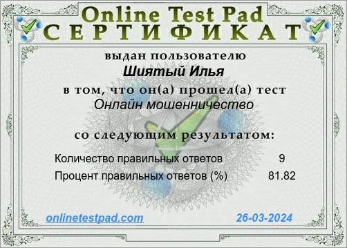
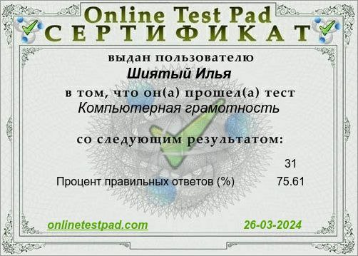
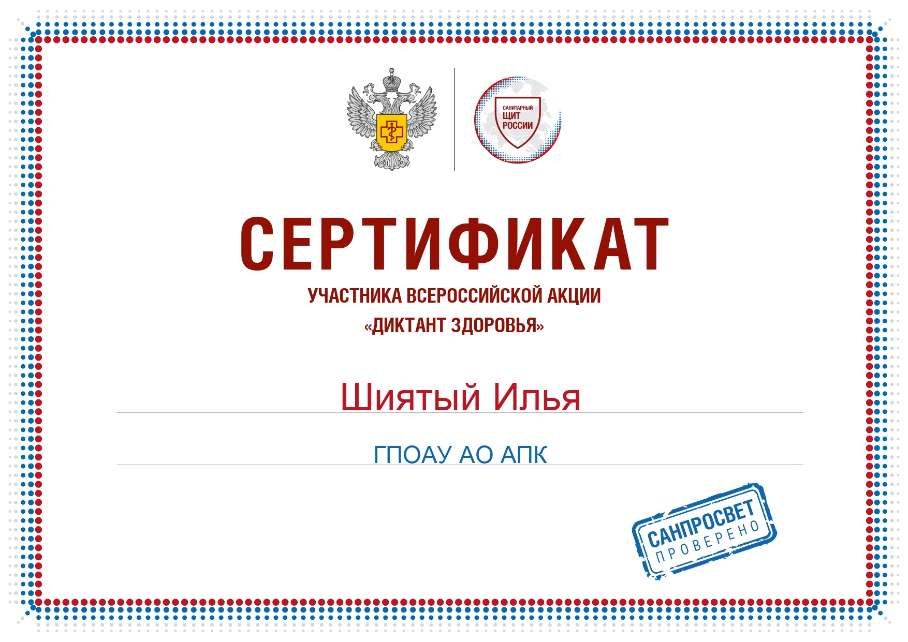
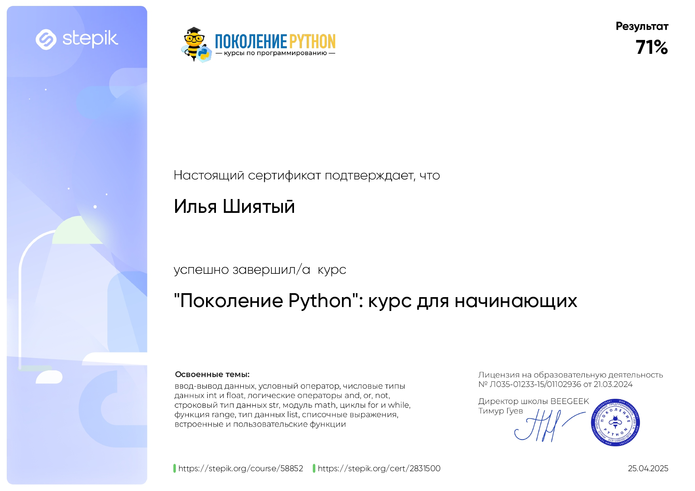
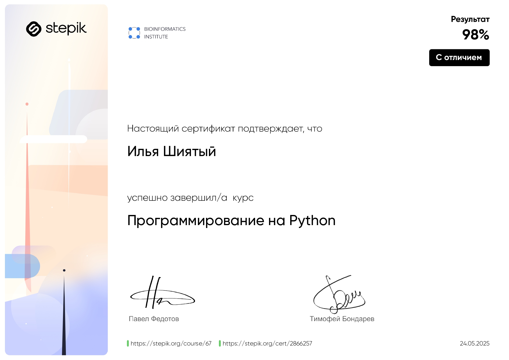
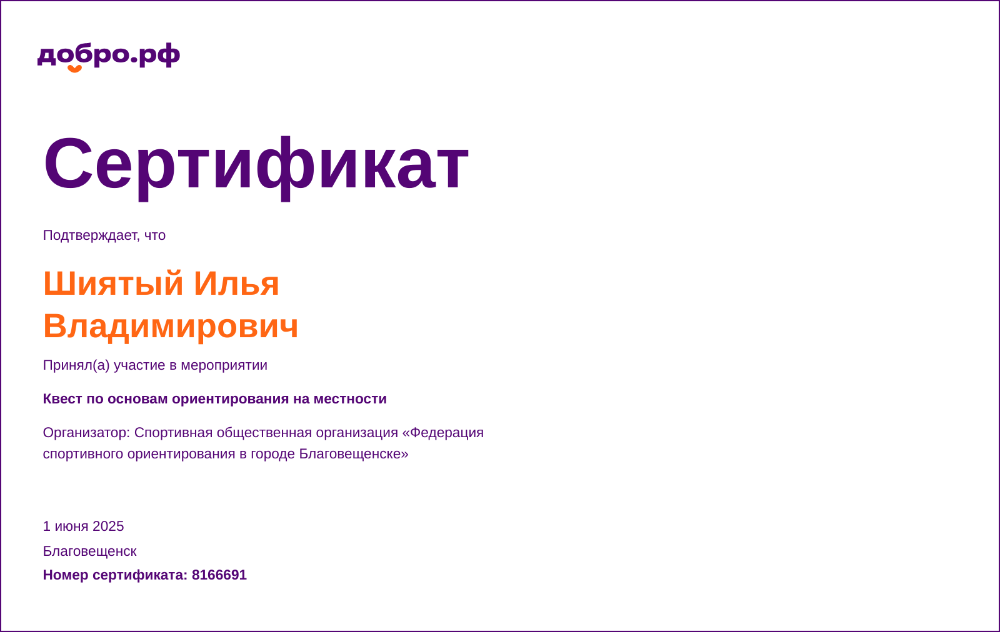
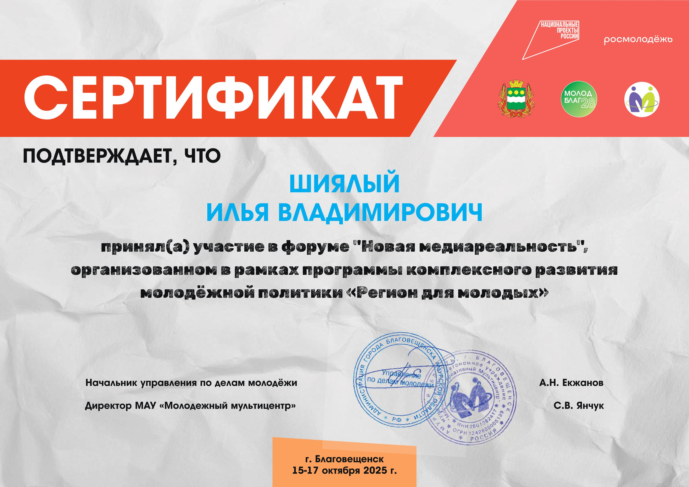
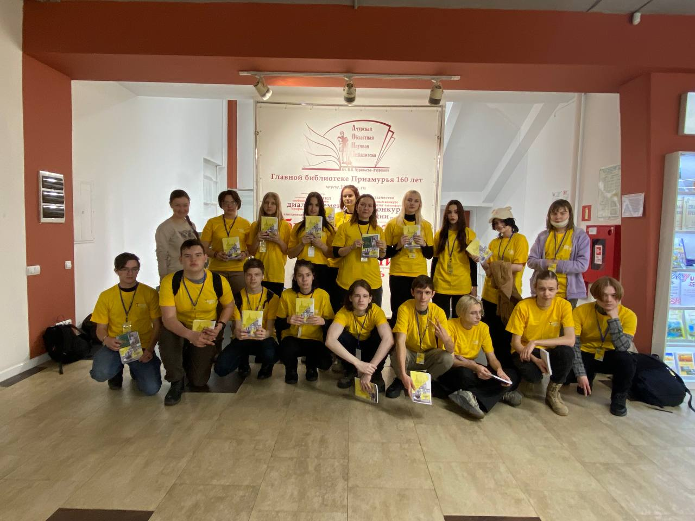
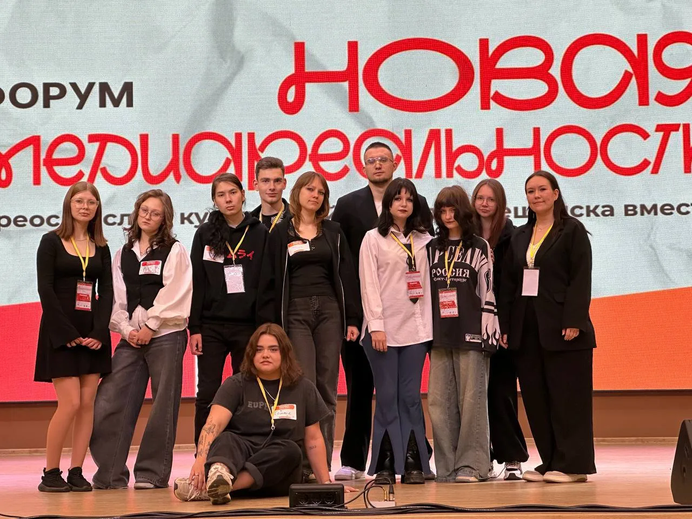

О себе
Меня зовут Илья. Я учусь на специалиста по информационным системам и программированию. Увлекаюсь веб-разработкой, Python, дизайном и созданием собственных цифровых проектов. Сейчас работаю над своими первыми идеями и учусь превращать их в реальные продукты.
Навыки
- HTML / CSS (вёрстка)
- Основы Python (боты, логика, простые скрипты)
- Adobe Photoshop (дизайн, баннеры)
- Работа с Telegram-ботами
- Планирование и прототипирование проектов
Портфолио
Сейчас я работаю над собственными идеями. Вот некоторые из них:
- IronShift — это научно-фантастическая экшен-RPG, которая будет разрабатываться на Unreal Engine 5 и будет посвящена пилотированию человекоподобных мехов на планете Khorus-IV. В проекте планируется система параметров C.O.R.E.T.E.K, возможность ручной расшифровки древнего механического языка и глубокая интеграция таинственного вещества Кор, лежащего в основе технологий мира. Игра будет сочетать динамичные сражения, расширяемую кастомизацию мехов, исследование окружения и атмосферный лор
- IRON HORIZON: SCAVENGER PROTOCOL - это будущая концепция игры, основанная на идее выживания на планете-свалке Аэгис-7, где игроки становятся мусорщиками, восстанавливающими древних боевых мехов. Игра сочетает двухуровневый геймплей: уязвимого пилота и мощного меха, управляемого благодаря "Живому Ядру" — ИИ-компаньону, сохраняющему личность и прогресс игрока. Основная идея проекта — создать честную survival-экосистему без P2W, с упором на кооперацию, строительством базы, сборкой мехов по чертежам и исследованиями опасных зон. Визуальный стиль, глубокая физика и тактические бои с гигантскими металлическими титанами должны формировать уникальный опыт, которого сегодня не хватает в жанре. Проект задуман как современный гибрид Rust + Titanfall 2 + Fallout 76, но с акцентом на эмоции, атмосферу "мусорного будущего" и долгосрочную привязанность игрока к своему ИИ-ядру.
- CapyHarmony: Guardians of the Wetlands — мобильная игра про магических капибар, спасающих мир от экологических катастроф.
Образование
Учебное заведение: ГПОАУ АО АПК
Специальность: Информационные системы и программирование (ИСиП)
Грамоты и сертификаты (1 курс)



Грамоты и сертификаты (2 курс)



Грамоты и сертификаты (3 курс)

Галерея
Фотографии меня с группой:

Фотографии меня с командой на Медиарельности:
Контакты
_